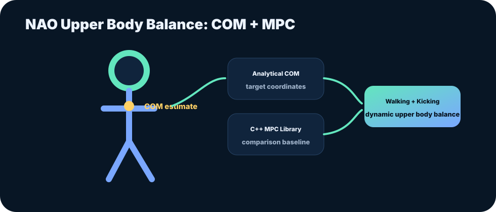

NAO Soccer Robot: Upper Body Control with MPC
Group project on model predictive control for NAO robot upper-body balance during walking and ball kicking.
Executive summary
The group project developed upper-body balance control concepts for a soccer robot during walking and ball-kicking motion.
The technical focus was analytical calculation of center-of-mass position and target coordinates, comparison against a C++ MPC library, and dynamic Z-axis COM changes.
The project is a strong portfolio piece because it connects robotics mechanics, control theory, and practical implementation.

Full document
Use this slot for the full thesis or project report PDF.
Read project report PDFChecking whether the full PDF has been uploaded...
Problem framing
Humanoid robots must manage balance while executing dynamic motions. During walking and kicking, upper-body positioning affects center-of-mass behavior and overall stability.
Engineering approach
- Implemented analytical solutions for center-of-mass position and target coordinate calculation.
- Compared analytical results against a C++ MPC library.
- Explored dynamic Z-axis COM position changes.
- Focused on balance support during walking and ball-kicking behaviors.
Outcomes and value
- Built a clear bridge between analytical robotics calculations and MPC implementation.
- Demonstrated ability to reason about humanoid balance and control constraints.
- Created a strong visual project story for robotics and control interviews.
Details for recruiters and collaborators
What this communicates
- You can work with robotics control concepts beyond drones and aircraft.
- You understand model-based control and physical motion constraints.
Recommended additions
- Upload the original project report PDF.
- Add one figure showing COM trajectory or controller comparison results.
How this fits the Kumar Harsh brand
This case study strengthens the central brand message: engineering reliable autonomous systems requires controls knowledge, test discipline, data interpretation, and documentation that can survive technical review.